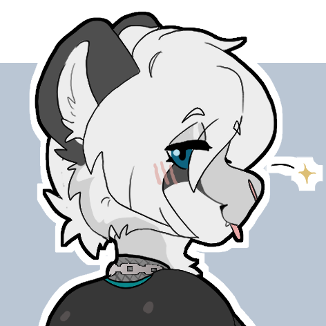

Known Relationships
█████████ Mira ------ Father █████ Mira ---------- Mother Heather Ouras ------- Friend; Assigned proximity by Aurin. Amy Kavinskaya ------ [NO DATA] █████████ ----------- [NO DATA] Owner of Neon Meow -- Previous Employer
Full Name ------ Hex Mira Species -------- Snow Leopard / Tanuki Hybrid Height --------- 6ft 1in / 185 cm Age ------------ Early Twenties Gender --------- Unsure Pronouns ------- They / He Sexuality ------ Sapphic Personality ---- Playful, Sassy Birthplace ----- Altai Mountains Residence ------ Nocturne City Favorite Food -- Tiramisu Favorite Drink - Silvine
█████████ Mira ------ Father █████ Mira ---------- Mother Heather Ouras ------- Friend; Assigned proximity by Aurin. Amy Kavinskaya ------ [NO DATA] █████████ ----------- [NO DATA] Owner of Neon Meow -- Previous Employer
Hex was born in the Altai mountains to a tanuki father and snow leopard mother, and lived under a mixture of the two lifestyles in their parent's home during their childhood. At 17, he left home to attend college abroad, taking a flight out of the country and purchasing a cheap motorcycle to make the rest of the journey to Nocturne City; a place he could live in for cheap until moving into college. During the drive, he passed through a large wheat field, all of which gleamed a golden brown. The sight amazed them, and was a stark contrast to the city in the distance he was headed to. His curiosity got the better of him when he noticed what looked like a run-down farmhouse in the middle of the field. It was August, and harvest season was near. At least that's what he thought. He needed a job, and he wasn't sure if being from another country would hinder any work he could find in the city. At least with farm work, despite how much he felt he would hate it, it was something he wouldn't be shown out the door for, right? But after wading through the crackling fibers and dead leaves of wheat, the farmhouse was empty. The cold, rotting wood flooring creaked as he walked inside. Papers were scattered everywhere, and filing cabinets, desks, and mechanical components filled the shack. A singular light was in the room, the bulb smashed and broken glass still on the floor with the paper; the only light came in through the open door. Hung from the ceiling was a large disk, twice Hex's height. It was held up by industrial ventilation and thickly insulated wires that went who knows where.
Project REBUILT was a privately funded research operation to create life forms out of synthetic materials that could live and function the same way a human or animal could. Reports left in disheveled office cabinets within the farmhouse describe repeated failures in DNA splicing in a facility located under an ex situ conservation facility called Refuge Tower. Nearly all of the documents Hex looked through were printed out and many were transcripts of E-mails. Some documents mentioned something called TIER 3; a project which was primarily handled by only three people, kept so secret not even the leaders of REBUILT knew.
Hex had no idea what to make of these documents. The world they lived in had few humans... many purposefully underwent gene surgery, leaving only elitists and people who didn't really care. But these documents were of a dying human race in a world without anything to fall back on. Something killing them all off. He dusted off the large metal disk, reading engraved text on the steel surface... and brushed against a broken wire he didn't see amidst the darkness of the room. He was hit by a single burst of electricity, the wire had been dormant for years and seemingly reacted to his touch. He fell to the floor after the electricity passed through him, and his vision blacked out. Where was he? Who was he? Their mind went blank. The powerlines connecting to the shack exploded moments later. Police blocked the road and investigated the cause. Finding Hex, they dragged him and his motorcycle to the hospital. They could not find identification on him; it had fallen out of his pocket and was lost amidst the various other papers in the room. Hex managed to make a full recovery within a month or so following extensive treatment and care---and was discharged when his memory returned. A star-shaped marking had appeared on his back during this time, which puzzled the doctors that had treated him during his recovery period.
Hex had used the remaining money he brought with him to pay for care. Without any plan, he drove back to Nocturne City and arrived at night. They spent the next few days scrounging around town for food and other basic needs, sleeping in an alleyway near a vending machine he managed to break his way into. He searched for work anywhere he could, but because he had lost all of his identification amidst the scattered paper of the abandoned shack, nobody was willing to hire him. Every once in a while... as Hex stared up to the sliver of sky visible in that alleyway... he saw people. One or two people would jump across the rooftop, not every night, but whenever they did they always jumped back the other way not long after. After a week of living in the street, they were approached by someone. This person offered him a job at a nightclub called Neon Meow. He had no other option but to accept; and he worked as a bartender's assistant. He was quickly promoted, rapidly being pushed through the career without any pay; he instead was provided a bedroom on the ground floor of the building, accessible through a staff area to the right of the bar. His employer experimented with Hex. A destitute waif could be given anything and it would be an improvement in their life. The manager of Neon Meow took advantage of this, and curated Hex's diet, activities, and routine in exchange for protection and a place to both call home and socialize with locals. His body was micromanaged into a sleek, voluptuous figure. The night life rubbed off on him all the while, affecting how he dressed and blinded him to any malpractice his boss did, especially as it improved his health. After over a year, Neon Meow's business venture paid off. Hex was assigned to the stage, exposing his body in order to keep his home. The athletic form he had become drew attention and customers to the nightclub; enough so that Hex began to receive a wage. The nightclub took off with great success, and Hex had no idea he was part of a scheme to do so. Years later, Hex has situated himself in a small apartment on his own. At the cost of not receiving free food or a place to live, Hex has been able to convince his employer to allow him to remain as only a bartender at Neon Meow.